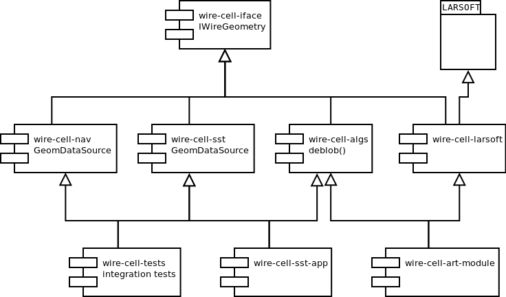

Wire Cell uses Interfaces to access major components.
Overview of Interfaces
Wire Cell has a number of high-level concepts which are implemented as C++ "Interface" classes. Such classes expose only methods which take or return either Plain Old Data (POD) or instances from the Wire Cell Data package.
The reason for this additional layer is to provide a decoupling
between the different Wire Cell packages and to allow one to set
actual implementations at the application layer. This allows for
competing implementations to be swapped in a transparent manner. For
example, one may have a wire geometry that comes from a parameterized
model that generates wire placements or one may have a detailed as-is
survey where each wire is painstakingly described and stored. The
code that uses such a geometry doesn't care and instead accesses
whatever the application layer gives it via the IWireGeometry
interface.
A concrete implementation may present multiple interfaces. For
example the GeomDataSource from the
Wire Cell Nav package
provides both IWireGeometry and IWireDatabase interfaces.
Providing Interfaces
Interface classes provide a mechanism to keep packages independent and loosely coupled. It does this by having code depend only on the generic interface classes and not on the concrete implementations.
It is possible (and easy) to violate paradigm and end up back with tightly coupled packages and code. This unwanted tight coupling can still occur if the code that produces the concrete implementation of an interface is intermixed with the code that consumes the interface.
To combat this one should layer the packages so that a higher application layer is responsible for creating the concrete implementations of interfaces as well as the consumer code (which may also be accessed through interfaces).
Specifically, to maintain this separation one should place any
apps/*.cxx and tests/*.cxx main programs which create concrete
implementations of interfaces in a package other than the one that
holds the generic src/*.cxx library files.
Context
There are various important interfaces that most all of Wire Cell code
will require. It is thus convenient to bundle access to these into a
single interface called the IContext. This simplifies high-level
application code as the code for creating and initializing a specific
context can be provided as a high-level library. For example, all
geometry and readout data may come from some domain. One example is
if the input to Wire Cell originates from
Wire Cell SST files.
High-level application code can depend on SST, produce an SST-based
context and feed its content to the Wire Cell code as generic
interfaces.
Example
The figure below gives a hypothetical example. At the top are the
Wire Cell interfaces. In the middle are the concrete implementations
of these interfaces. At the very bottom are (paradoxically)
high-level application components which aggregate concrete
implementations together in order to drive the program. Shown is an
example of how Wire Cell and LArSoft might integrate. A
wire-cell-larsoft component would provide concrete implementations
of Wire Cell interfaces using code that depends on facilities from
LArSoft. A high-level (at the bottom) "application" (an Art module)
would tie together the interfaces implemented by LArSoft code and the
Wire Cell implementation in order to run in an Art job.
